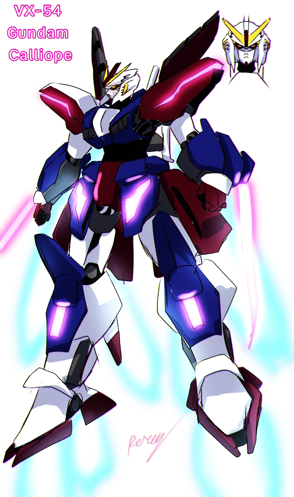
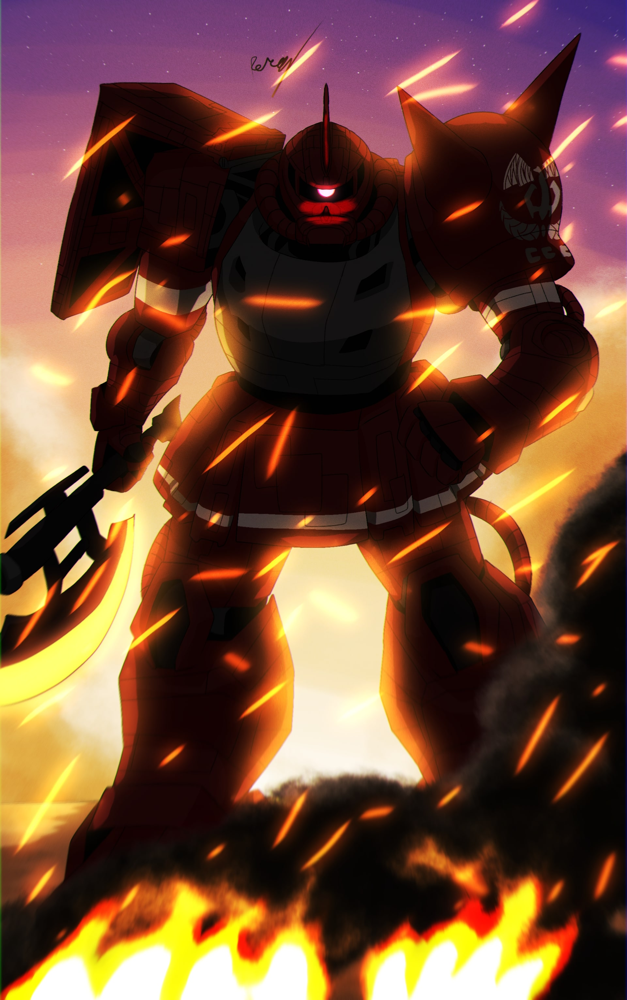

Here's some stuff About Me
My name is Alfred Seraphin Perez, I am 21 years old and i am an aspiring Artist and future Pilot, I also do ocassional Editing and graphic design. I have a bunch of interests and hobbies such as drawing, watching movies, desigining vehicles and many more. I enjoy alot of sci fi stuff from star wars, star trek, comics to even mechas. ever since being a kid i've always wanted to fly an aircraft, so with my skills in art and my motivation to study more i may try to apply for piloting in the future once i've gathered enough funds to do it. some tidbits is im also learning some 3D modeling and even traditional drawings such as portraits and more, but in the end it will all lead to soaring high in the sky.
below are two examples of my art that i've quite enjoyed making this year, if you wish to see the full catalogue of artwork i've amassed, please click on the portfolio icon above.

The Gundam Calliope

The Red comet
×